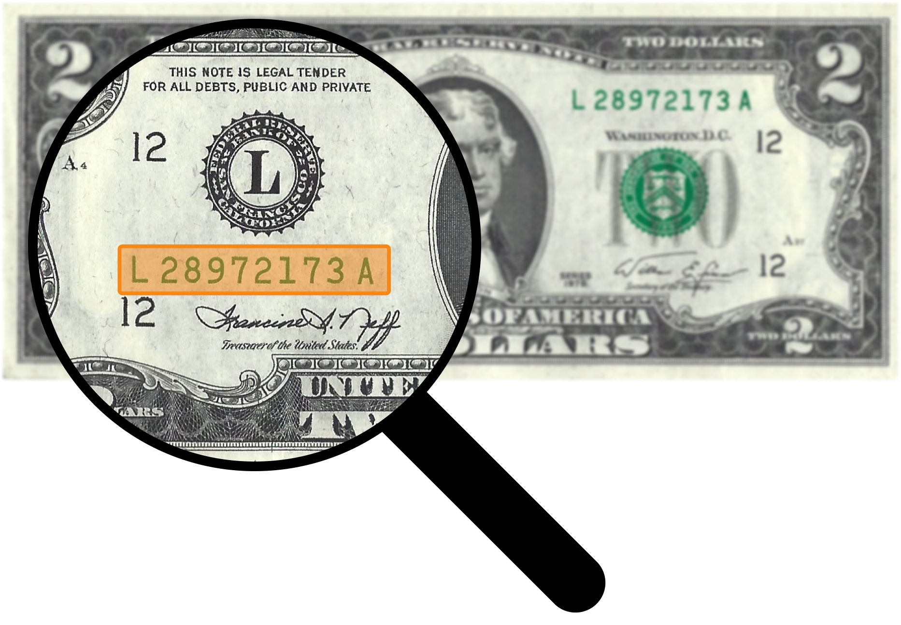

Each bill contains a private key to a wallet with $2 worth of bitcoin at the moment of its creation.
These bills explore the changing value of two forms of money sharing the same medium. Starting at equal value, how will the purchasing power of the dollars and bitcoin change over time?
Enter your bill's serial number to see its bitcoin wallet balance:
Bitcoin is a digital currency created in 2009 that operates without banks. It uses technology to enable fast, low-cost payments worldwide. Bitcoin is limited in supply, and its value can change over time.
A private key is a secret code that lets you spend the bitcoin in a wallet. Keep it safe and don’t share it!
This is the only copy of your private key and the only way to access your bitcoin.
The bitcoin is yours just by holding the private key. If you'd like to access it, remove the security sticker to reveal the 52 character private key. Download a bitcoin wallet app (like BlueWallet or Sparrow), select "Import Wallet," and enter the private key from your bill.
Yes! The bitcoin wallet and text on the bill does not impact its value or function. You can remove the sticker to store your bitcoin key separately, or pass it forward by spending the bill with the wallet attached (I have not tried spending these with a clerk, but you could give it as a tip).
The value was $2 when we created the bill. The value of bitcoin can fluctuate relative to the dollar, so it's possible that your balance is more or less than $2 at any time. If the balance is 0, someone may have gotten access to your private key and moved the bitcoin.
The bitcoin private keys are kept behind a security sticker. If someone peeled off the sticker and tried to put it back, the sticker would have the word "VOID" written across it. If your bill is missing the sticker entirely, then someone removed it and the bill is now worth its face value of $2.
Bitcoin addresses are generated on an offline, airgapped computer. That address is funded with $2 worth of bitcoin at the moment of creation.
A Smith Corona typewriter is used to type the private key, balance, date, exchange rate, URL, and bill number. The paper holding the private key is adhered to the bill using a tamper proof sticker.
I do not keep copies of the private keys, and at no point is the private key connected to the internet.